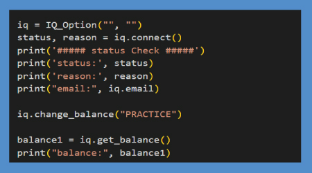
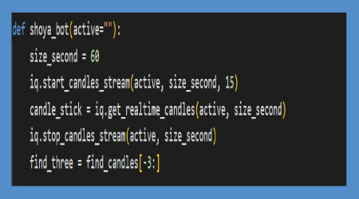
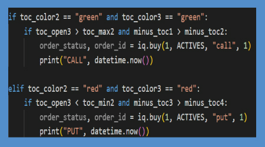
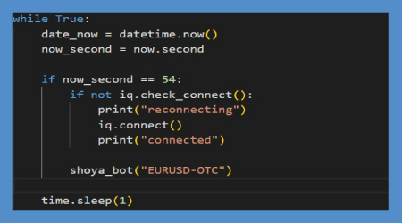
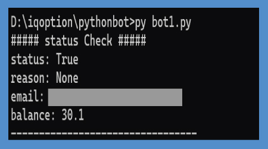
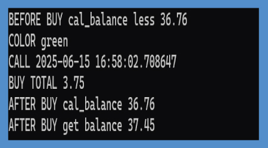

ระบบเทรดอัตโนมัติด้วย Python สำหรับการวิเคราะห์และซื้อขายตามรูปแบบแท่งเทียน
โปรเจกต์นี้เป็นระบบเทรดอัตโนมัติที่เขียนด้วยภาษา Python เพื่อทำการตัดสินใจซื้อขายบน IQ Option
โดยบอทจะวิเคราะห์ข้อมูลตลาดแบบเรียลไทม์ และซื้อขายตามกลยุทธ์ที่กำหนดไว้ล่วงหน้า
1. การเชื่อมต่อกับ IQ Option
ส่วนนี้คือการเชื่อมต่อไปยังแพลตฟอร์มการซื้อขาย IQ Option
เพื่อให้บอทสามารถส่งคำสั่งซื้อขายได้
ใช้ไลบรารี IQ_Option เพื่อสร้างการเชื่อมต่อ และตั้งค่าให้เชื่อมต่อกับ
บัญชีฝึกหัด (Demo Account)

ภาพตัวอย่าง:
การเชื่อมต่อและยอดคงเหลือในบัญชีฝึกหัด
2. รับข้อมูลแท่งเทียนแบบเรียลไทม์
บอทจะเริ่มสตรีมข้อมูลแท่งเทียน สำหรับสินทรัพย์ที่กำหนด (เช่น
"EURUSD-OTC")
ในช่วงเวลา 60 วินาที (แท่งเทียน 1 นาที) และดึงข้อมูลแท่งเทียน **สามแท่งสุดท้ายที่สมบูรณ์แล้ว**
เพื่อนำมาวิเคราะห์

ภาพตัวอย่าง:
การแสดงข้อมูลแท่งเทียนแบบเรียลไทม์จากแพลตฟอร์ม
3. การวิเคราะห์รูปแบบแท่งเทียน
บอทจะวิเคราะห์ราคาเปิด, ราคาปิด, ราคาสูงสุด และราคาต่ำสุด
เพื่อกำหนดสี
และบอกรูปแบบการซื้อขาย
เงื่อนไขหลัก:
- เงื่อนไขออปชั่น Call (ซื้อขึ้น):
บอทจะซื้อ "CALL"
ถ้าแท่งเทียนสองแท่งสุดท้ายเป็นสี เขียว ทั้งคู่
และแท่งเทียนที่สามเปิดสูงกว่าราคาสูงสุดของแท่งที่สอง
- เงื่อนไขออปชั่น Put (ซื้อลง):
บอทจะซื้อ "PUT"
ถ้าแท่งเทียนสองแท่งสุดท้ายเป็นสี แดง ทั้งคู่
และแท่งเทียนที่สามเปิดต่ำกว่าราคาต่ำสุดของแท่งที่สอง

ภาพตัวอย่าง:
รูปแบบการคำนวณเพื่อตัดสินใจซื้อขึ้นหรือซื้อลง
4. การทำงานของบอท (ให้ทำงานต่อเนื่อง)
บอทจะทำงานในลูปไปเรื่อยๆ และจะตรวจสอบโอกาสการซื้อขายที่ วินาทีที่ 54
ของทุกนาที
ซึ่งเป็นเวลาสำคัญในการตัดสินใจก่อนที่แท่งเทียนใหม่จะขึ้น นอกจากนี้ยังมีระบบตรวจการเชื่อมต่อ
เพื่อให้บอทเชื่อมใหม่ได้อัตโนมัติหากการเชื่อมต่อหลุด

ภาพตัวอย่าง:
การทำงานวนซ้ำและตรวจสอบเวลาของบอท

ผลลัพธ์การเชื่อมต่อที่รันด้วย Command
Prompt

ผลลัพธ์การชนะที่รันด้วย Command Prompt
จุดแข็งของโปรเจกต์
- ระบบอัตโนมัติ: บอททำงานได้ตลอดเวลาตามที่ตั้งไว้
- เงื่อนไข: ซื้อขายชัดเจนจากรูปแบบแท่งเทียน
- ความเสถียร:
มีระบบตรวจสอบและเชื่อมต่อใหม่อัตโนมัติหากการเชื่อมต่อหลุด